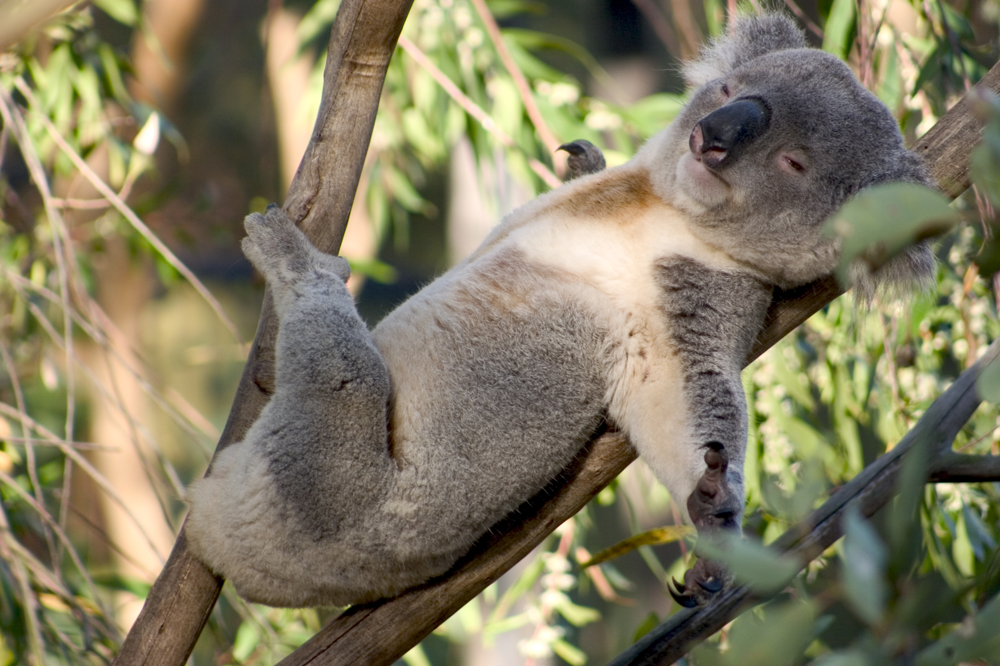
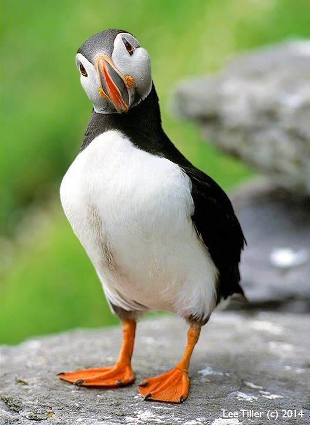
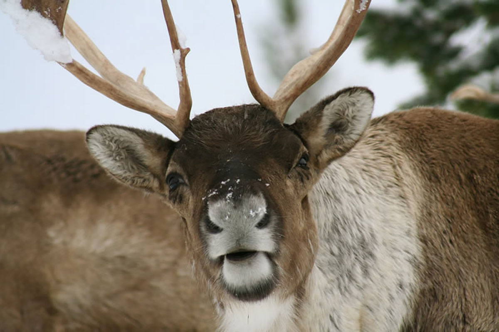
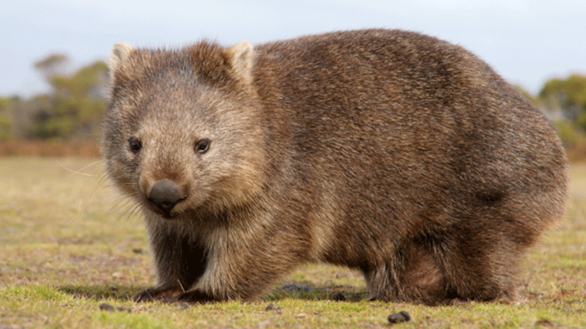

Animal facts
- Koala fingerprintsare so close to humans’ that they could taint crime scenes.
- Parrots will selflessly help each other out.
- Prairie dogs kiss.
- Ghost crabs growl
using teeth in their stomachs.
- The mantis shrimp has the world’s fastest punch.
- Puffins use twigs to scratch their bodies.
- Bottlenose dolphins are even more right-handed than humans.
- Reindeer eyes turn blue in the winter.
- Giraffes have black tongues.
- A group of owls is called a parliament.
- Axolotls can regenerate their parts.
- Horses have distinct facial expressions.
- Wombat poop is cube-shaped.
- Orcas can learn to speak dolphin.
- Horned lizards squirt blood from their
eyes.



